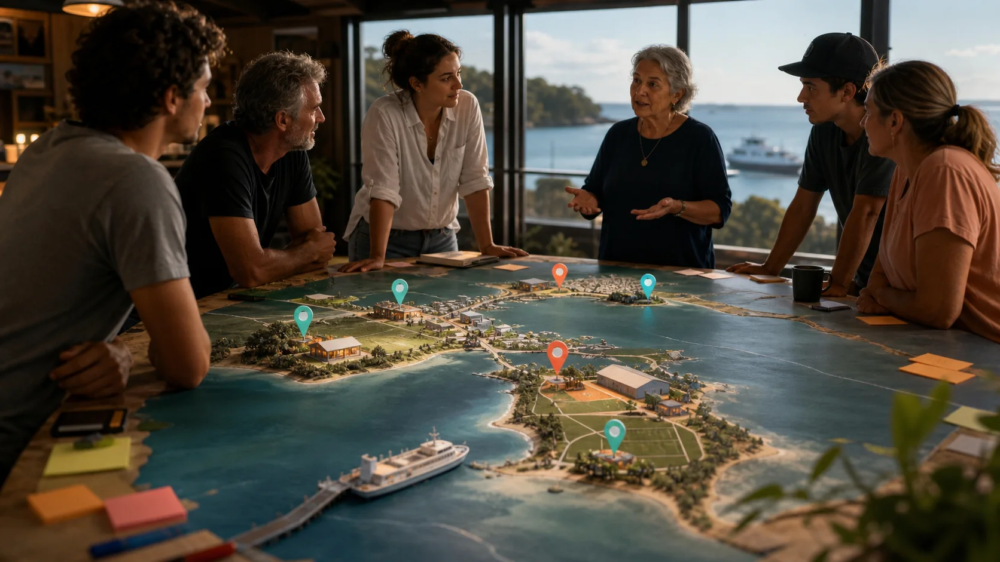

What can 10-12 Ballow Road carry?
Does sand sport, screen culture, night markets, visitor notices and all-ages programming make most sense at Dunwich because ferry movement, shops, services and the proposed site sit close together?

Nearby network
10-12 Ballow Road is the proposed main base. Nearby ideas only help if the local context is clear: what belongs at Dunwich, what stays separate at 9 Ballow Road, what the ferry upgrade changes, and whether Point Lookout or Amity add real value without stirring up avoidable trouble.
Neighbouring map
This page is a sorting table, not an instruction sheet. It asks what each nearby place can add to the Dunwich main base, what it might complicate, and who needs to be in the room before anything moves.
Does sand sport, screen culture, night markets, visitor notices and all-ages programming make most sense at Dunwich because ferry movement, shops, services and the proposed site sit close together?
How much of the Ready S.E.T. co-op trust work, admin help, training, support desk and local service capacity belongs in that separate nearby project?
The terminal work changes arrival, accessibility, safety, wayfinding and commercial flow. The hub question is how locals and visitors move through that change.
The old sand-mining or ferry-edge maker-space idea is a separate question about repair, training, fabrication, materials, noise, access and tenancy.
Point Lookout has one sports and recreation zone. Is the only spare space in that zone, beside the skate park east of the hall/library, useful for special sand-sport or festival days?
Most people know the cricket field and Amity Community Club. Fewer know the sports and recreation reserve continues south beyond them into scrub/regrowth. Is that part of the reserve useful for anything, while keeping existing sport, club and community uses comfortable?
Pressure test
Island Vibe is a reminder, not a template. Accommodation, camping, traffic, noise, weather, waste, volunteers and venue pressure decide whether attention feels good or exhausting. The nearby question is not "can an event happen there?" It is "which events earn that pressure, and who benefits locally?"
Related sites
These pages keep neighbouring concepts useful and easy to separate.